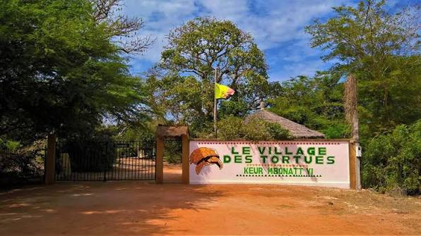

Photo

The Tortoise Village
Centre de protection à Noflaye près de Bambilor, dédié aux tortues géantes Sulcata et à la sensibilisation à la nature.
- Observation de plusieurs espèces de tortues.
- Visite guidée idéale en famille.